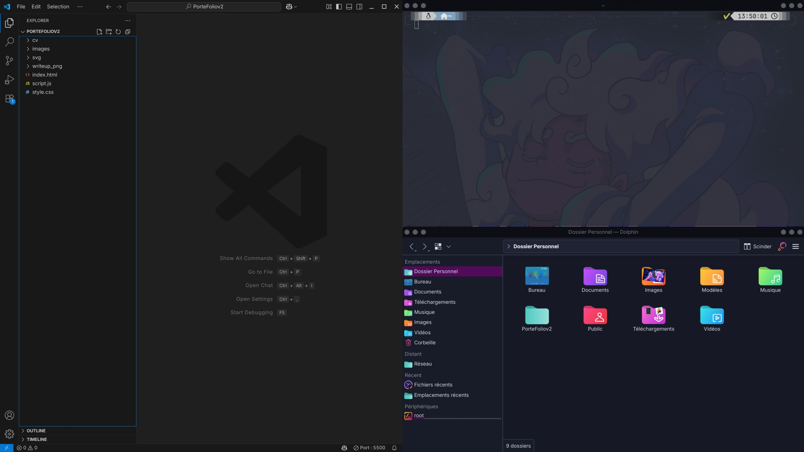

À propos de moi
üôã‚Äç‚ôÇÔ∏è √Ä propos de moi
üéì √âtudes et Formation
Cours :
- RGPD, Vulnérabilité Applicative, Gestion Cyber-Attaque, PRA/PCA, IPS/IDS, Sécurité du Cloud, Gestion d'identités, Analyse forensic réseau, SOC & SIEM, Cryptographie, Sécurité WIFI, Pentest, Gouvernance, Méthode Agile, PSSI..
üéñÔ∏è Classements & R√©alisations
- TryHackMe: Hacker, ≈ Top 10%
- Hack The Box : Hacker, ≈ Top 800
- Plus de 50 machines HackTheBox compromises, 3 Pro Labs et plus de 50 salles TryHackMe terminées.
About Me
Passionate about cybersecurity, I have pursued a BTS SIO with a focus on SISR, a professional license in ADMINSYS, and I am currently preparing a Master's degree in Cybersecurity. Cybersecurity is a complex and constantly evolving field, but that's what makes it fascinating. Platforms like HackTheBox and TryHackMe have become essential tools for me, allowing for practical "learn by doing" that perfectly complements theoretical education.
üôã‚Äç‚ôÇÔ∏è About Me
üéì Studies & Training
Courses:
- GDPR, Application Vulnerability, Cyber Attack Management, DRP/BCP, IPS/IDS, Cloud Security, Identity Management, Network Forensic Analysis, SOC & SIEM, Cryptography, Wi-Fi Security, Pentesting, Governance, Agile Methodology, PSSI..
üéñÔ∏è Rankings & Achievements
- TryHackMe: Hacker, ≈ Top 10%
- Hack The Box : Hacker, ≈ Top 800
- Over 50 HackTheBox machines pwned, 3 Pro Labs and over 50 TryHackMe rooms completed.
üìù Projets
Audit Active Directory
J'ai conduit l'audit de plusieurs environnements Active Directory au sein de l'entreprise depuis l'environnement Exegol, avec une méthodologie structurée : lancement des ingestors BloodHound pour collecter et ingérer les données dans la base, suivi de l'utilisation d'AD-Miner pour analyser et prioriser les vulnérabilités identifiées de manière granulaire. Pour chaque vulnérabilité critique, j'ai développé des Proofs of Concept (PoC) détaillées précisant l'impact business (chemins d'attaque vers Domain Admin, DCSync, etc.), l'exploitation via scripts reproductibles (BloodHound paths → SharpHound → attaque ciblée), et les corrections recommandées (GPO, ACL, délégations). Des tickets Jira ont été créés, priorisés par criticité, avec suivi de leur résolution par les administrateurs réseaux, et une ré-audit systématique a validé l'efficacité des mesures déployées.
Ce que j'ai appris :
Ces audits Active Directory en entreprise m'ont confronté à la réalité des environnements de production, bien au-delà des labs isolés : j'ai dû prendre en compte les contraintes réseau (segmentation, proxies, EDR), les politiques de logging existantes, et les impacts business lors de la planification des PoC. J'ai appris à adapter mes attaques (Kerberoasting, DCSync, etc.) à des contextes contraints où les users réels, les GPO strictes et les outils de détection (Sysmon, SIEM) changent la donne. La coordination avec les administrateurs via Jira et les ré-audits post-remédiation m'ont enseigné la criticité de la communication claire et du suivi opérationnel en red-team mature.
Mise en place d'un XDR
Intégration d'un SIEM/XDR (Wazuh) au sein d'une entreprise : j'ai d'abord réalisé une étude comparative du marché des solutions SIEM, conduit des visioconférérences avec les commerciaux, puis rédigé un rapport détaillé des avantages/inconvénients pour chaque outil. La direction a retenu Wazuh, que j'ai ensuite déployé en exploitant ses principales fonctionnalités : intégration VirusTotal et Suricata pour la détection réseau, File Integrity Monitoring (FIM), surveillance des logs et corrélations d'événements. Ce projet m'a permis de maîtriser l'implémentation d'une plateforme XDR complète en environnement de production.
Ce que j'ai appris :
Ce projet d'intégration SIEM/XDR m'a permis de maîtriser l'évaluation stratégique des solutions de sécurité (benchmarks, négociations commerciales, ROI), le déploiement technique de Wazuh en production (intégrations VirusTotal/Suricata, FIM, corrélations d'événements), et la gestion de projet transverse (de l'étude initiale au Go-Live avec les équipes ops). J'ai appris l'importance de l'alignement business-technique et des phases de tuning post-déploiement pour minimiser les faux positifs en environnement réel.
Automatisation de l'audit des règles Fortinet
Développement de Forti-audit, un toolkit Python d'audit automatisé pour firewalls FortiGate : analyse avancée des policies de sécurité (règles inutilisées, permissives ALL-ALL/duplicatas, logging manquant) via PolicyCheck, et validation de connectivité des objets réseau (ping IP/CIDR, détection objets morts) via ObjectsCheck. Les scripts génèrent des rapports JSON structurés avec stats, findings priorisés (CRITICAL/HIGH/MEDIUM) et recommandations actionnables, à partir d'exports JSON FortiGate.
Ce que j'ai appris :
Ce projet m'a permis de maîtriser l'analyse automatisée des configurations FortiGate (policies permissives, objets orphelins), le parsing JSON complexe pour audits scalables, et la génération de rapports actionnables priorisés par risque. J'ai approfondi les best practices NGFW (règles least-privilege, logging exhaustif, cleanup), et acquis une expertise en scripting Python pour DevSecOps, applicable à d'autres appliances réseau en production.
üìù Projects
Audit Active Directory
I conducted audits of several Active Directory environments within the company from the Exegol platform, following a structured methodology: launching BloodHound ingestors to collect data and ingest it into the database, followed by the use of AD-Miner to analyze and prioritize identified vulnerabilities in a granular way. For each critical vulnerability, I developed detailed Proofs of Concept (PoCs) describing the business impact (attack paths to Domain Admin, DCSync, etc.), the exploitation process through reproducible scripts (BloodHound paths → SharpHound → targeted attack), and recommended remediation actions (GPO, ACL, delegation adjustments). Jira tickets were created and prioritized based on severity, with follow-up by network administrators, and a systematic re-audit was performed to validate the effectiveness of the deployed measures.
What I learned:
These Active Directory audits in corporate environments exposed me to the realities of production systems, far beyond isolated lab settings: I had to account for network constraints (segmentation, proxies, EDR), existing logging policies, and business impact when planning PoCs. I learned to adapt attack techniques (Kerberoasting, DCSync, etc.) to constrained contexts where real users, strict GPOs, and detection tools (Sysmon, SIEM) significantly affect outcomes. Coordination with administrators through Jira and post-remediation re-audits taught me the importance of clear communication and operational follow-up in a mature red team approach.
Implementation of an XDR
Integration of a SIEM/XDR (Wazuh) within a company: I first conducted a comparative study of the SIEM market, held videoconferences with vendors, and produced a detailed report outlining the pros and cons of each solution. Management selected Wazuh, which I then deployed by leveraging its key features: VirusTotal and Suricata integration for network detection, File Integrity Monitoring (FIM), log monitoring, and event correlation. This project allowed me to gain hands-on experience in implementing a complete XDR platform in a production environment.
What I learned :
This SIEM/XDR integration project enabled me to master the strategic evaluation of security solutions (benchmarks, vendor negotiations, ROI), the technical deployment of Wazuh in production (VirusTotal/Suricata integrations, FIM, event correlation), and cross-functional project management (from initial assessment to go-live with operations teams). I learned the importance of business-technical alignment and post-deployment tuning phases to minimize false positives in real-world environments.
Automated Fortinet Audit Tool
Development of Forti-audit, a Python-based automated audit toolkit for FortiGate firewalls: advanced analysis of security policies (unused rules, overly permissive ALL-ALL or duplicate entries, missing logging) through PolicyCheck, and network object connectivity validation (IP/CIDR ping, detection of inactive objects) via ObjectsCheck. The scripts generate structured JSON reports including statistics, prioritized findings (CRITICAL/HIGH/MEDIUM), and actionable recommendations based on FortiGate JSON exports.
What I learned :
This project allowed me to master the automated analysis of FortiGate configurations (permissive policies, orphaned objects), complex JSON parsing for scalable audits, and the generation of actionable, risk-prioritized reports. I deepened my understanding of NGFW best practices (least-privilege rule design, comprehensive logging, cleanup processes) and developed strong Python scripting expertise for DevSecOps, applicable to other production network appliances.
üìö Parcours d'Apprentissage
üî• Comment je d√©veloppe mes comp√©tences
üìñ Ressources Essentielles
Applications Web
-
Dafydd Stuttard – Créateur de PortSwigger
Actuellement la meilleure plateforme pour apprendre le pentest web et sécuriser.

- Mark Curphey – Fondateur de l'OWASP
L'OWASP fournit des ressources et outils pour aider à sécuriser les applications web.

Environnements AD / Windows
- Carlos Polop – Dirigeant de HackTricks
HackTricks est une ressource complète pour le pentest, particulièrement utile pour l'Active Directory, les vulnérabilités applicatives et les techniques persistances.

ü߆ Types d'Attaques que j'√âtudie
Kerberos attaques
NTLM Relay attaques
üìö Learning Path
üî• How I build my skills
üìñ Essential Resources
Web Applications
-
Dafydd Stuttard – Creator of PortSwigger
Currently the best platform for learning web pentesting and securing hands-on labs.
- Mark Curphey – Founder of OWASP
OWASP provides resources and free tools to help secure web applications and exploits.
AD / Windows Environments
- Carlos Polop – Leader of HackTricks
HackTricks is a comprehensive pentesting resource, particularly useful for an Active Directory environments, application vulnerabilities, and persistence techniques.
ü߆ Attack Types I Study
Kerberos
NTLM Relay Attack
üõ†Ô∏è Environments & Outils
üåë Environment
Exegol
⚡ Outils Favoris
Reconnaissance
- Nmap - Nmap est utilisé pour découvrir les hôtes et services d'un réseau, cartographier son infrastructure, identifier les ports ouverts et détecter d'éventuelles vulnérabilités, ce qui en fait un outil essentiel de reconnaissance et d'audit en cybersécurité.
Lien vers Nmap :
Test d'Applications Web
- BurpSuite - BurpSuite est utilisé pour analyser et tester la sécurité des applications web, il permet d'intercepter, modifier et rejouer les requêtes HTTP/S, d'identifier des vulnérabilités comme les injections ou les failles XSS, et d'automatiser des tests grâce à ses modules (Scanner, Intruder, Repeater, etc.).
Lien vers BurpSuite :

Windows/Active Directory
- NetExec - NetExec est un outil de post-exploitation et d'automatisation en pentest, particulièrement utile dans les environnements Windows et Active Directory. Il permet de vérifier des identifiants à grande échelle, d'exécuter des commandes à distance, d'énumérer les partages, sessions et utilisateurs, et d'accélérer de nombreuses étapes d'attaque en centralisant les actions. C'est un véritable couteau suisse pour gagner du temps et simplifier l'énumération ainsi que la post-exploitation réseau.

Lien vers NetExec :
üè† Configuration de Lab Personnel

Lien vers CachyOS :
üìù Aide-m√©moires
Obsidian
Exemple de mon vault Obsidian :
Télécharger Obsidian :
üõ†Ô∏è Environments & Tools
üåë Environment
Exegol
⚡ Favorite Tools
Reconnaissance
- Nmap - Nmap is used to discover hosts and services on a network, map its infrastructure, identify open ports, and detect potential vulnerabilities, making it an essential tool for reconnaissance and cybersecurity auditing.
Link to Nmap:
Web Application Testing
- BurpSuite - BurpSuite is used to analyze and test web application security. It allows intercepting, modifying, and replaying HTTP/S requests, identifying vulnerabilities such as injections or XSS flaws, and automating tests thanks to its modules (Scanner, Intruder, Repeater, etc.).
Link to BurpSuite:
Windows/Active Directory
- NetExec - NetExec is a post-exploitation and automation tool for pentesting, particularly useful in Windows and Active Directory environments. It allows large-scale credential checking, remote command execution, share/session/user enumeration, and speeds up many attack steps by centralizing actions. It's a true Swiss Army knife for saving time and simplifying both enumeration and network post-exploitation.
Link to NetExec:
üè† Personal Lab Setup
üìù Cheat Sheets
Obsidian
Example of my Obsidian vault:
Download Obsidian:
üéì Certifications
üìú Mes Certifications
- üó°Ô∏è Certified Penetration Tester Specialist - Hach The Box Academy
- üí∞ Certificat de compromission OffShore - Hach The Box Pro Labs
- üî´ Certificat de compromission Dante - Hach The Box Pro Labs
- üé• Certificat de compromission P.O.O - Hach The Box Pro Labs


üéì Certifications
üìú My Certifications
- üó°Ô∏è Certified Penetration Tester Specialist - Hach The Box Academy
- üí∞ Certificate of compromission OffShore - Hach The Box Pro Labs
- üî´ Certificate of compromission Dante - Hach The Box Pro Labs
- üé• Certificate of compromission P.O.O - Hach The Box Pro Labs
üì¨ Contact
üìû Prenez Contact
- üìß Email: xotourliff@gmail.com
- üìÑ CV: T√©l√©charger mon CV (PDF)
üì¨ Contact
üìû Get In Touch
- üìß Email: xotourliff@gmail.com
- üìÑ CV: Download My CV (PDF)